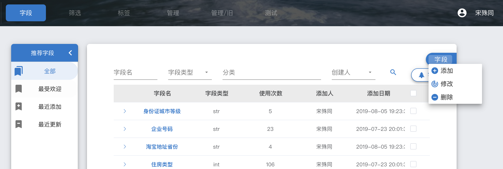
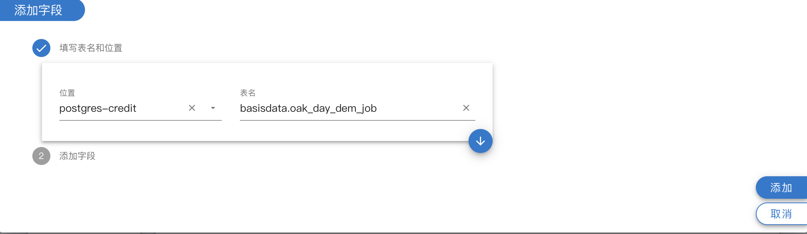
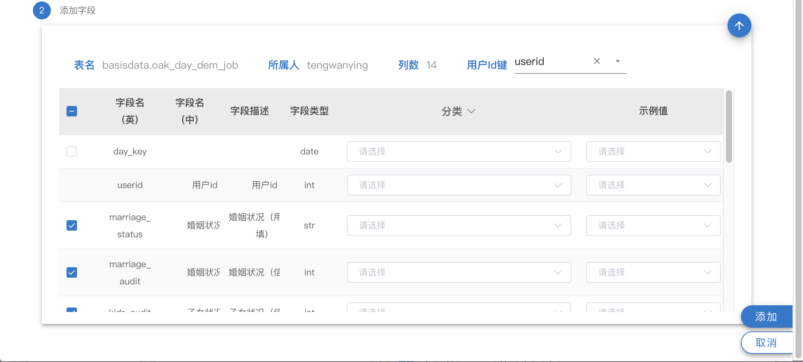
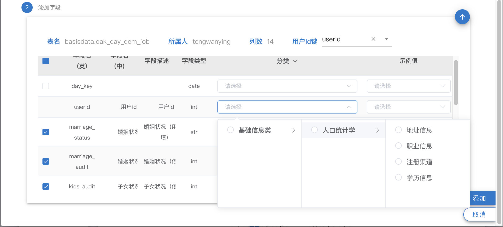
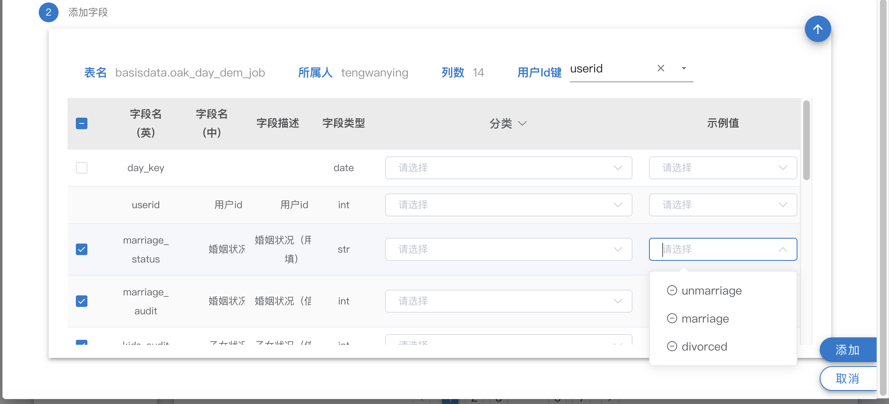
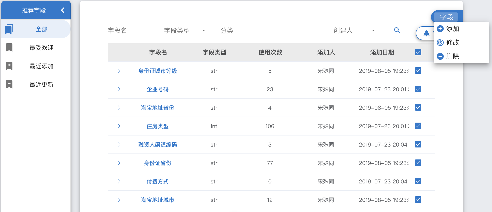
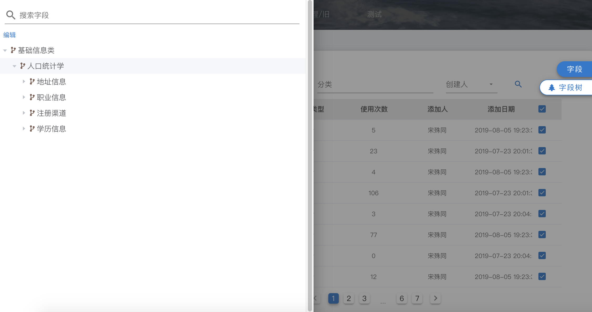
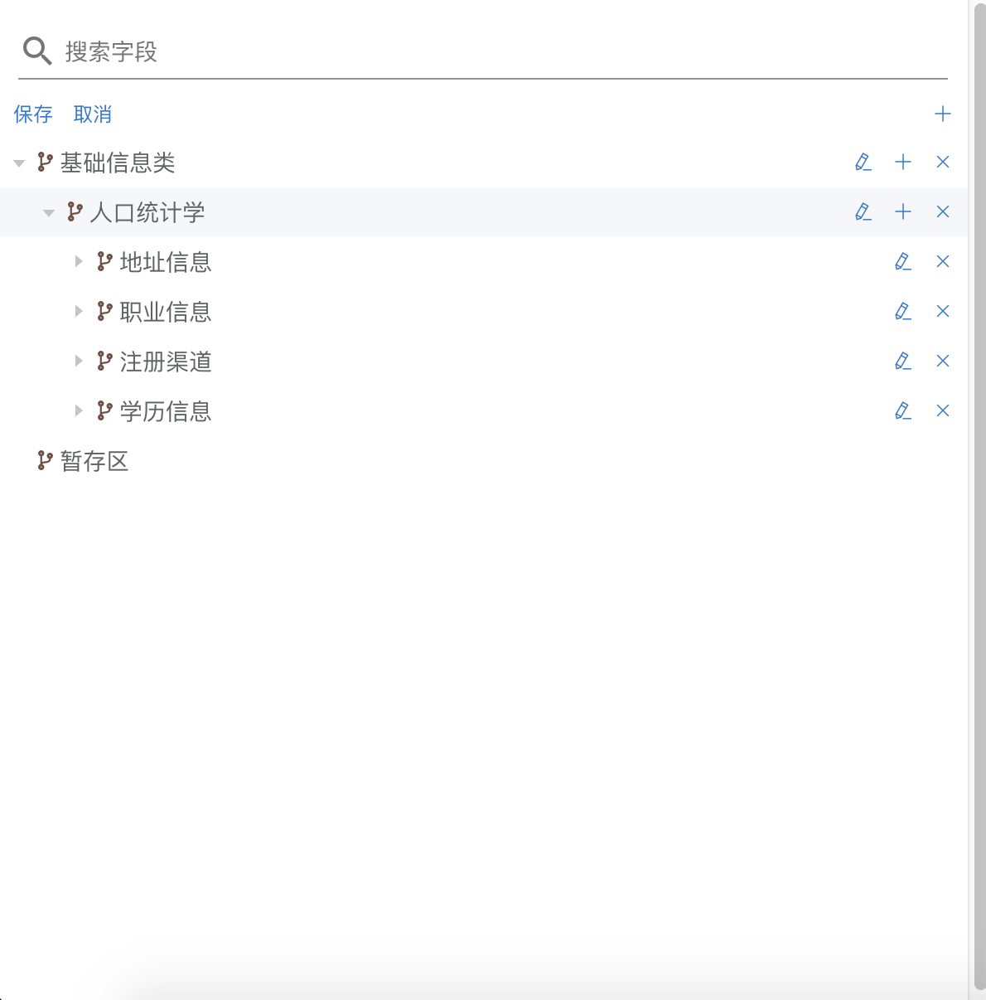

字段¶
什么是字段¶
用户的字段代表了用户的“维度”，字段来自于全部大树产品在运营过程中产生的用户各个维度的数据。
如何添加字段¶
- 外部字段：
外部字段的添加需先在Oak数据库中oak_data schema里添加表，自行负责表的插入，创建，备注，更新。
对于外部表的要求：用户id不能重复，增量或者全量更新皆可，但推荐增量。
准备好数据后执行如下步骤
1. 在字段按钮点击添加

2. 选择位置与输入表名

3. 选择用户id字段，并选择需要添加的字段，注意，不需要添加day_key，createtime，lastupdatetime等字段。

4. 修改字段的中文名，描述，选择字段分类，也可点击分类按钮，进行批量操作

5. 选择字段示例值，删除点击’-‘，添加在输入框输入后敲回车

内部字段：
敬请期待
如何修改、删除字段¶
选择字段后点击删除或修改 
字段树¶
字段树支持叶子/枝干搜索，可以很直观的查看整个oak的字段体系 
修改字段树，需注意： 1. 叶子与枝干不能共存，也就是一个分类不能和字段是同级 2. 任何字段的转移都会先存到暂存区，保存时暂存区必须为空 